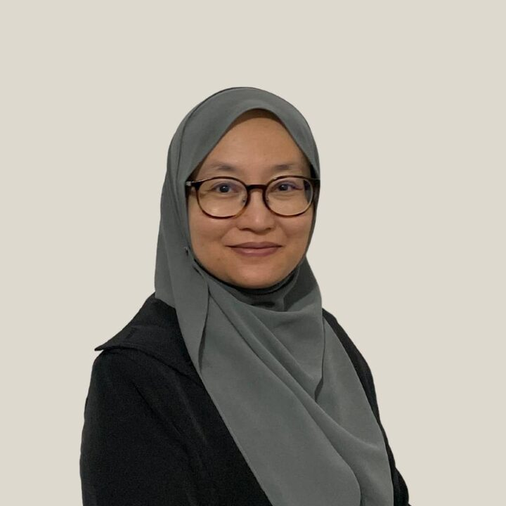

Associate Professor · Universiti Teknologi MARA
Dr Sukreen Hana
binti Herman
Materials scientist and electronics engineer at the Microwave Research Institute (MRI), UiTM. She builds thin films and sensors that read the world around us, and she brings young people into science and technology.

- 185Publications
- 50Research grants
- 32Postgraduates supervised
- 17Industry consultations
- h-index
Research
Six threads, one question:
how do materials sense?
The groups below come from the titles of all 185 publications. Pick one to filter the publication list.
Output over time
25 years of publishing
Publications per year, by type. Hover or tap a bar to see the year's numbers.
Publications
Search the full list
Research grants
50 funded projects since 2004
Supervision
32 postgraduate theses supervised
10 PhDs completed, 3 PhDs in progress and 19 Master's degrees completed.
Industry & community
Taking science outside the lab
17 consultations with telcos, banks and national agencies. Most of them train teachers and young people in digital skills, coding, robotics and AI.
Education
Academic path
- 2009Doctor of PhilosophyMaterials Science
- 2003Master of EngineeringElectronics & Computer Science
- 1999Bachelor of Engineering (Hons)Electrical & Computer Science
Researcher profiles
Find her work
Contact
Collaborate, supervise, consult
For research collaboration, postgraduate supervision or STEM programmes, email her directly.
Microwave Research Institute (MRI)
Universiti Teknologi MARA, Malaysia